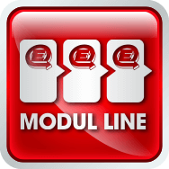
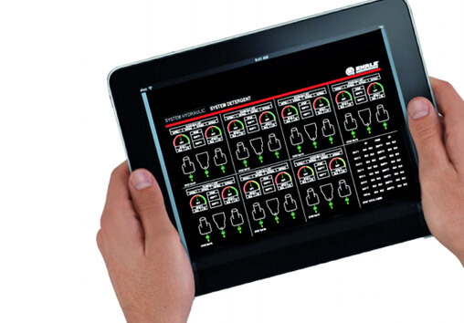
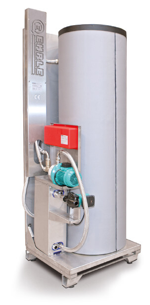

Бренд EHRLE однозначно ассоциируется с бесконтактной технологией, совершенствуемой инженерами на протяжении многих лет
Мойки EHRLE применяют 4 программы мытья
чтобы узнать больше, нажмите на выбранную программу
1

Мойка микропорошком
Power Pearl™ быстро удаляет грязь с поверхности автомобиля. Благодаря специальной формуле активных молекул напоминающей реакцию тысячи микрогубок, МикроПорошок безопасен для лакокрасочного покрытия автомобиля
2
Споласкивание чистой водой
Для споласкивания МикроПорошка, автомойки используют чистую, умягченную воду с программы 2-ой
3

UltraProtection
3-я программа мойки обеспечивает защиту лакокрасочного покрытия, благодаря использованию горячего воска UltraProtection. Он создает пленку на поверхности автомобиля, что позволяет воде свободно стекать и одновременно улучшает работу стеклоочистителей
4
SuperFinish
Последняя 4-я программа, в которой бесконтактная мойка использует чистую деминерализованную осмотическую воду и осушитель, гарантирует эффект блеска
Бренд EHRLE и бесконтактная технология, совершенствованная инженерами, проектирующими мойки на протяжении многих лет, однозначно ассоциируются.
Некоторое время тому назад щеточные автомойки самообслуживания вытеснили первоначальные ручные мойки. Сейчас щеточные сменяют бесконтактные решения, которые чаще всего выбирают клиенты. Компания EHRLE – лидер подготовляющий мойки самообслуживания, предлагает метод бесконтактной очистки, так как вместе с производимой техникой и высококачественными химическими средствами он самый эффективный и безопасный для автомобилей. Применяемая для аппаратов высокого давления и автомоек бесконтактная технология мытья подкрепляется бесспорным опытом, постоянно совершенствующим более полувека.
Во время визита на автомойках EHRLE клиенты встречаются с приятным фруктовым ароматом. Это заслуга применяемого в 1-ой программе МикроПорошка Power Pearl™, который, кроме своих химических свойств, обладает приятным запахом.
Четыре программы мойки достаточно для тщательной очистки автомобиля. Компания EHRLE продолжает работы по сокращении количества программ до минимума с целью создать самую легкообслуживаемую мойку для клиентов. Благодаря этому водители экономят время и получают возможность мыть автомобиль, нервозно не следя за временем мытья.
Умелое мытье автомобиля, инновационная технология и использованные высококачественные химические средства это причины, для которых бесконтактная мойка самообслуживания EHRLE, позволяет достичь отличного удовлетворяющего результата без риска получить царапины и другие возможные повреждения, связанные с применением щеток.
Немецкая точность и инновационные технологические идеи получили много разных наград. Самым ценным является Сертификат качества VDA, который получила мойка самообслуживания EHRLE, подтверждающий безопасность бесконтактного мытья.
Сертификат VDA
Выдаваемый Союзом немецкой автомобильной промышленности Сертификат качества VDA (Verband der Automobilindustrie) является элитарной наградой для тех производителей, которые отвечают строгим требованиям и стандартам качества, установленным этим престижным институтом.
Среди них – немецкая система менеджмента качества QMC автомобильной промышленности. VDA QMC это сертификат, выдаваемый экспертами качества, которые по заказу производителей и поставщиков автомобилей проводят исследования с целью разработки единых технологических стандартов качества продукции: [Certyfikat VDA dla myjni EHRLE]
функциональность: уровень и диапазон реализации ожидаемых функций практичность: удобство пользования, легкость обслуживания и хранения и их эргономичность надежность: способность работать без недостатков и дефектов прочность: срок сохранения используемых свойств безопасность пользования
Последний пункт бесспорно подтверждает, что автомойки EHRLE абсолютно безопасные для самого чувствительного к повреждениям лакокрасочного покрытия автомобилей, в том числе нового. Доказательством этого является существование бесконтактных автомоек самообслуживания EHRLE в автосалонах и сервисных центрах известных марок. Компания EHRLE – первый и единственный производитель бесконтактных автомоек на нашем рынке сертифицированный VDA для бесконтактной технологии мытья. Кроме техники высокую оценку получили химические средства, производимые компанией EHRLE.
Для убеждения клиента в качестве предлагаемой ему услуги, автомойки EHRLE дополнительно обладают знаком Сертифицированного качества мытья EHRLE.
Modul Line ETRONIC 4
Новаторская модель автомойки ModulLine и операционная система ETRONIC 4 - это новейшие решения, достойные современного производства.

Автомойки EHRLE более десятка лет обладают системой дистанционного управления данными и настройками через GSM либо интернет. В настоящее время старая система заменяется новой: ETRONIC 4, являющейся плодом сотрудничества с инженерами немецкой компании SIEMENS. Это инновационная и современная система в отрасли автомоек для контроля, автодиагностики, а так же диагностики оборудования для сервисного центра EHRLE.

Для выбора Инвестором предоставляется две версии системы:
Basic – в стандартной комплектации автомойки CarWash Indoor Modul Line ETRONIC 4. Инвестор на сенсорном дисплее компьютера SIEMENS либо через ISDN/DSL или GSM, имеет доступ ко всем базовым настройкам: время работы оборудования, счастливые часы (happy hours), дозирование химии, а также доступ к статистическим данным по оборотам автомойки в течение определенного периода времени. Версия Basic информирует Инвестора об основных рабочих параметрах автомойки, отправляет электронные сообщения о сервисных проблемах. Опция мониторинга CM1 предоставляет Инвестору актуальную информацию о температуре воздуха и температуре технической воды. От отдельных контроллеров каждого поста данные передаются на главный компьютер.
Comfort – система позволяет осуществлять дистанционную диагностику оборудования и анализ возможных сервисных проблем на сенсорном дисплее с большим разрешением 12,1’’. Инвестор на сенсорной панели компьютера, либо через модем ISDN/DSL или GSM, имеет доступ к дополнительным информациям, в том: техническое состояние коммуникаций и отдельных модулей, а также отдельных элементов оборудования. Есть возможность контролировать заполнение емкостей жидкой химией и порошком. Предлагается 2 опции системы мониторинга: CM2 и CM3, есть также возможность комплектации согласно пожеланиям Инвестора. Опция CM2 позволяет контролировать все системы оборудования, которые отображаются на мониторе компьютера в форме графической схемы. Опция CM2 позволяет проверять следующие параметры: давление воды из сети, давление воды для мытья, давление осмотической воды или воды системы противзамерзания. Опция CM3 обладает всеми функциями опции CM2, а также позволяет следить за уровнем моющих средств в емкостях: МикроПорошка Active PowerPearl MicroPowder™, воска UltraProtection и осушителя SuperFinish.
EHRLESol™
EHRLESol™ это инновационная, экономная и прежде всего экологическая солярная система, которую используют на автомойках EHRLE
Компания EHRLE эффективно реализирует политику сбалансированного развития. Учитывая состояние нашей планеты и ее ограниченные природные ресурсы, а так же экономическую ситуацию, связанную с ростом цен на нефть и другие источники энергии, предлагаем инновационную систему EHRLESol™.
Компания EHRLE эффективно реализирует политику сбалансированного развития. Учитывая состояние нашей планеты и ее ограниченные природные ресурсы, а так же экономическую ситуацию, связанную с ростом цен на нефть и другие источники энергии, предлагаем инновационную систему EHRLESol™.
Спроектированные инженерами EHRLE специальные солярные панели располагаются на крыше бесконтактной автомойки. Для беспребойного функционирования система EHRLESol™ интегрирована с системой отопления и другими системами оборудования. Благодаря EHRLESol™ инвестор может снизить до 40% расхода газа в год. Повышенный интерес к системе вытекает не только из-за заботы об окружающей среде, но также из-за колебаний рынка энергетических ресурсов, повышенного спроса и исчерпания запасов.
Благодаря близкому сотрудничеству с ведущим производителем отопительных систем, компания EHRLE в состоянии предложить инвесторам технологические решения, которые позволяют сэкономить расходы на отопление и способствуют охране окружающей среды. Это дает основу обращаться за грантом ЕС, где экономические и экологические инвестиции положительно оцениваемые.
На Международной выставке STACJA PALIW немецкая система EhrleSOL™ была награждена Польской палатой жидкого топлива дипломом «Продукт года 2009.
Real Time Display
Предлагаемые с самого начала панели управления из нержавеющей стали, за последние несколько лет прошли модернизацию. Кроме самого дизайна, характеризующегося приятной графикой и брызгозащищенными клавишами, на протяжении последних лет применено и добавлено: защита для монетоприемников, возможность монтажа системы отсасывания монет, возможность выбора версии панели с коротким или высоким коробом. В этом году панель управления полностью преобразовалась.
Теперь Инвестор вместе с автомойкой получает абсолютно новую модель панели управления - Real Time Display. Вместо используемого до сих пор дисплея, отображающего оставшееся количество импульсов, предлагается новый дисплей оставшегося реального времени мытья за данную денежную единицу. Это значительное облегчает посетителям контролировать время мойки, которые видят сколько точно времени осталось до окончания процесса мытья, и тем самым могут его лучше и эффективнее использовать. Инвестор в свою очередь может быть уверен, что данный водитель не заблокирует пост другим клиентам.
С этого года панели управления EHRLE укомплектованы системой предоставляющей возможность новых форм оплаты, кроме доступных до сих пор. Компания EHRLE - это единый производитель в отрасли, который предлагает 6 способов оплаты за мойку: при помощи монет, жетонов, ключей EHRLE KeySystem, купюр, кредитных карт и мобильного телефона, из которых 3 последних это абсолютная новинка. Тем самым решается проблема отсутствия наличных денег у клиентов, которые хотят помыть автомобиль. Это, несомненно, большой успех компании EHRLE, так как никакой другой компании из данной отрасли не удалось ввести на рынок такого решения, в том числе дисплея реального времени.
LCE / SLM - Профессиональные системы отопления
Компания EHRLE эффективно реализирует политику сбалансированного развития. Учитывая состояние нашей планеты и ее ограниченные природные ресурсы, а так же экономическую ситуацию, связанную с ростом цен на нефть и другие источники энергии, предлагаем инновационную систему EHRLESol™.
Обогревательные атмосферные котлы EHRLE LCE 20-85кВт с газовой горелкой
Основной обогревательный модуль EHRLE с котлом из нержавеющей стали может обеспечивать горячей водой даже 4 поста мойки.
Модуляционная газовая горелка с плавной регулировкой мощности от 5% до 100% в сочетании с самой современной конденсационной технологией составляют систему обогрева с максимальной производительностью и экономией энергии.
Атмосферный котел EHRLE LCE 30-160 кВт
Котел из нержавеющей стали может обеспечивать горячей водой даже 8 постов мойки.
Модуляционная газовая горелка в сочетании с самой современной конденсационной технологией составляют систему обогрева с максимальной производительностью и экономией энергии.
Модуль обогрева – дизельный обогрев LCE 50-74 кВт
Обогрев воды осуществляется котлом на дизельном топливе. EHRLE пользуется проверенной технологией отопительного змеевика, изготовленного из нержавеющей стали, с высокопроизводительной камерой сгорания.
Нагретая таким образом вода хранится в специально изолированном котле.

Модуль SLM – 50-160 кВт
Модули SLM - теплообменники, используемые для подключения источников тепла, в случаях, когда теплоноситель подается в мойку под давлением и возвращается в систему обогрева. SLM необходимы для работы с котлами типа BUDERUS, а также для решений с подачей горячей воды из узлов центрального отопления, либо из внешней котельной и т.д. Модули фабрично оборудованы теплообменниками и циркуляционными насосами. Они сразу приспособлены к обслуживанию системы обогрева полов на постах мойки.
Система Тoчнoй Дoзaции Микpoпopoшкa
Авторская система точной дозации МикроПорошка применяемая компанией EHRLE, отлчиается интересным решением и эксклюзивным механизмом
Компания EHRLE, прежде всего, известна бесконтактной и порошковой технологией. Сердцем нашего оборудования является система точной дозации МикроПорошка EHRLE Globoid, которая является нашей большой гордостью. Все элементы системы изготовлены из современной, профессиональной пластмассы и тефлона, что обеспечивает долговечную и безотказную работу изделия. Система EHRLE Globoid управляется компь ютером, благодаря чему Инвестор имеет возможность дистанционно проверять количество использованного порошка. Применяемая специальная червячная система дозации точно дозирует количество порошка, необходимого для первой программы – основной мойки с МикроПорошком Active PowerPearl. Предлагаемые моющие средства характеризуются двумя важными свойствами - они экономичные и экологические. Благодаря своей уникальной структуре они более эффективные, одного мешка порошка хватает на большее количество моек автомобилей, чем другие средства предлагаемые на рынке. Кроме того, специальная серия порошка X LOP содержит 50% фосфатов меньше, благодаря чему их можно использовать даже там, где очень строгие нормы по охране окружающей среды.
Активная пена
Генератор пены является дополнительным оборудованием, которое можно установить на мойках EHRLE. Активная пена подается на посты мойки отдельным пистолетом и позволяет расширить возможности автомойки следующей программой мойки.
Компания EHRLE является первым производителем бесконтактных автомоек использующих инновационную технологию активной пены с системой точной дозации МикроПорошка. Активная пена повышает эффективность мойки; под её воздействием грязь размягчается, что позволяет удалить даже самые стойкие загрязнения. При исползовании современного пневматического генератора пены нужно только 1,5 – 2% химического средства для получения густой, активной пены.
Современный генератор пены из-за своих габаритов может применяется как в автомойках контейнерного типа так и модульного.
Автономный компрессор и вспомогательный насос с регулятором давления гарантируют достижение постоянно одинаковых параметров пены, несмотря на число работающих постов. Регулировка пропорции смешивания компонентов позволяет получить оптимальный химический состав, а также густоту и объём пены. А благодаря отдельной системе хранения и подачи, мягкая пена всегда готова для применения.
Опцией активной пены могут быть оборудованы как все посты на мойке, так и только выбранные. Генератор пены EHRLE может производить деликатную пену от 0,5 мм до 80 мм.